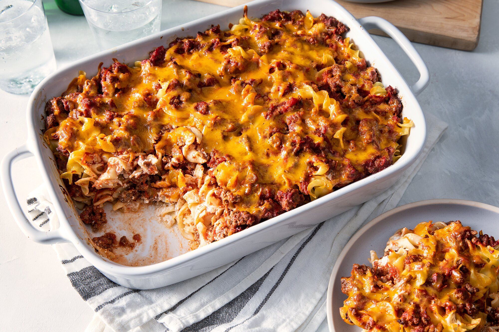

Lasagne

When the weather gets colder, it's time to break out the warm and filling comfort food. And what's better than a delicious casserole on a crisp October night? Casseroles can be the easiest meal to make on a busy weeknight, and they never skimp on the flavor. This month the Allrecipes community was loving our casserole recipe collection. From main dish dinners to side dishes, and even breakfast casseroles, there are casseroles to fit our home cooks' every need. Scroll through to find October's most popular casserole recipes.
Ingredients
- 1 cup all-purpose flour
- 1 cup yellow cornmeal
- 2/3 cup white sugar
- 1 teaspoon salt
Steps
- Preheat oven to 400 degrees F (200 degrees C). Spray or lightly grease a 9 inch round cake pan.
- In a large bowl, combine flour, cornmeal, sugar, salt and baking powder. Stir in egg, milk and vegetable oil until well combined. Pour batter into prepared pan.
- Bake in preheated oven for 20 to 25 minutes, or until a toothpick inserted into the center of the loaf comes out clean.